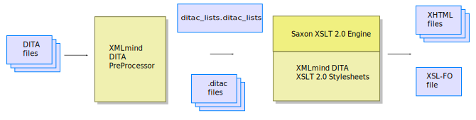

In order to extensively customize the output of ditac,
you need to learn how it works.
Basically, this means that
you'll have to understand the contents of the
ditac_lists.ditac_list file and the .ditac
files, which are generated by the ditac
preprocessor.
An extensive customization works exactly like a simple one:
Create a custom XSLT 2.0 stylesheet which imports the stock
one.
Redefine one or more attribute sets and/or one or more templates in
the custom XSLT 2.0 stylesheet.
The only difference is that this time, you need to know exactly what is
the format of the files you are going to transform. The bad news first:
the ditac XSLT 2.0 stylesheets do not transform plain DITA files. They
transform .ditac files, which are fully preprocessed DITA
files. Now, the good news: .ditac files mainly contains DITA
elements and because the ditac preprocessor performs all the grunt work
beforehand, .ditac files are really straightforward to
transform.
In fact, transforming .ditac files rather than plain DITA
files allows to concentrate on creating great-looking output.
How it works
The ditac
preprocessor generates a single
ditac_lists.ditac_list file and one or more
.ditac files(1) out of the
source DITA files.
Figure 11-1. The intermediate files generated by the ditac
preprocessor

Then, each .ditac file, which mainly contains fully
preprocessed DITA topics, is transformed in turn by the ditac XSLT 2.0
stylesheets.
The ditac_lists.ditac_list file,
which contains useful information about the overall DITA document being
converted, is not directly transformed by the ditac XSLT 2.0 stylesheets.
Instead, when needed to, the ditac XSLT 2.0 stylesheets query the
ditac_lists.ditac_list file in order to generate
optional items. Example: number topics, tables, figures, etc, when
parameter number='XXX'
has been specified.
It is possible to examine the contents of the
ditac_lists.ditac_list file and those of the
.ditac files by specifying the -preprocess
command-line option.
Example:
$ ditac -preprocess \
-v -chunk single \
-images img -p xsl-resources-directory res \
out/manual.html manual.ditamap
Contents of a .ditac file
The root
element of a .ditac file is <ditac:chunk>.
A <ditac:chunk> element may have the following
child elements (in any order and in any number):
<ditac:titlePage>
This empty placeholder element means: generate a ``title page''
section here.
<ditac:toc>
This empty placeholder element means: generate a Table of
Contents section here.
<ditac:figureList>
This empty placeholder element means: generate a List of
Figures section here.
<ditac:tableList>
This empty placeholder element means: generate a List of
Tables section here.
<ditac:exampleList>
This empty placeholder element means: generate a List of
Examples section here.
<ditac:equationList>
This empty placeholder element means: generate a List of
Equations section here.
<ditac:indexList>
This empty placeholder element means: generate an Index
section here.
A DITA topic of any kind
A fully preprocessed topic. This topic is guaranteed not to
contain nested topics.
<ditac:flags>
A wrapper element for a DITA topic of any kind. A
<ditac:flags> element is used to wrap any
DITA element which has been flagged by the means of a conditional
processing profile (a .ditaval file). See the
-filter command-line option.
More formally, the content model of
<ditac:chunk> is specified by the schema/ditac.rnc RELAX NG
grammar.
The DITA topics contained in
a .ditac file are fully preprocessed. What does this mean?
Basically that they are ready to be transformed without further
efforts:
Conref inclusions have been processed.
Unspecified attributes having default values have been added to
the elements. Example: a <p> element becomes
<p class="- topic/p ">.
Elements now have a ``flat'', globally unique, ID. Example: the
@id attribute of this <title>
element <topic id="introduction"><title
id="start"> becomes id="introduction__start".
The @href attribute of
<xref>, <link>,
<image>, <svgref>,
<mathmlref> elements now point to the (future)
output files. Example: the @href attribute of this
<xref> element <xref
href="intro.dita#introduction/start"> becomes
href="userguide-1.html#introduction__start".
Some text may have been added to empty
<xref> and <link>
elements.
The <reltable> elements of the DITA map
have been converted to <related-links> sections
or to extra <link> elements.
Filtered elements have been removed. Flagged elements have been
wrapped in a <ditac:flags> element.
Contents of the
ditac_lists.ditac_list file
The root
element of the ditac_lists.ditac_list file is
<ditac:lists>. A
<ditac:lists> element may have the following child
elements (in this exact order and in this exact number):
<ditac:chunkList>
A <ditac:chunkList> contains a
<ditac:chunk> element for each
.ditac file. A <ditac:chunk> element
may be seen as the manifest of a .ditac
file.
Contains all the DITA elements needed to generate the ``title
page'' section of a document. This element exists but is empty if
the DITA document being converted has no title and no metadata (e.g.
<topicmeta>/<autor>,
<bookmeta>/<publisherinformation>,
etc).
Contains all the information needed to generate the List of
Figures section of a document. This element exists but is empty
if the DITA document being converted contains no
<fig> elements having a
<title> child element.
Contains all the information needed to generate the List of
Tables section of a document. This element exists but is empty
if the DITA document being converted contains no
<table> elements having a
<title> child element.
Contains all the information needed to generate the List of
Examples section of a document. This element exists but is empty
if the DITA document being converted contains no
<example> elements having a
<title> child element.
Contains all the information needed to generate the List of
Examples section of a document. This element exists but is empty
if the DITA document being converted contains no
<equation-figure> elements having a
<title> child element.
Example:
<ditac:equationList><ditac:equation file="part222.html" id="part222__first_equation"
number="part.2 equation.1" title="First equation">
<ditac:description>This is a short description of the first equation.
It should be displayed in the <i class="+ topic/ph hi-d/i ">
<b class="+ topic/ph hi-d/b ">List of
Equations</b></i>.</ditac:description>
</ditac:equation>
.
.
.
<ditac:equation file="trademarks.html" id="trademarks__I_qa9vmk_"
number="equation.4" title="Second equation"/>
</ditac:equationList>
<ditac:indexList>
Contains all the information needed to generate the Index
section of a document. This element exists but is empty if the DITA
document being converted contains no
<indexterm> elements.